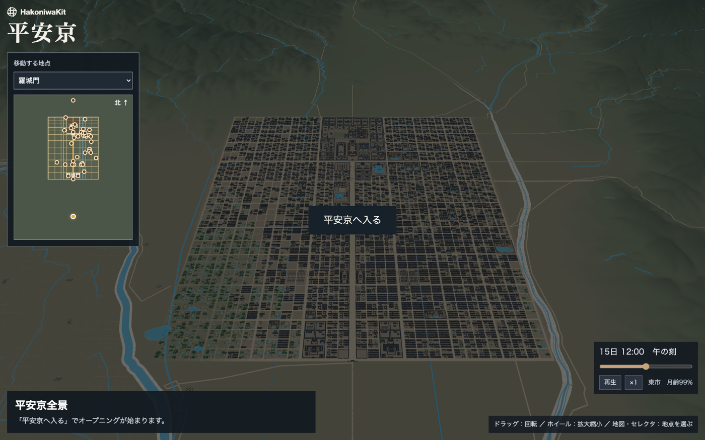
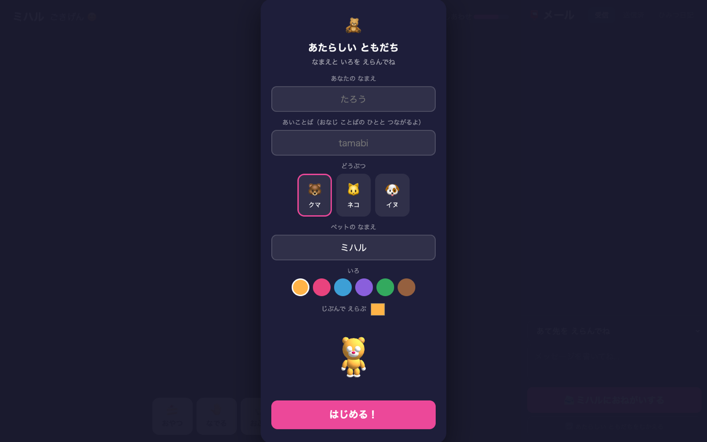
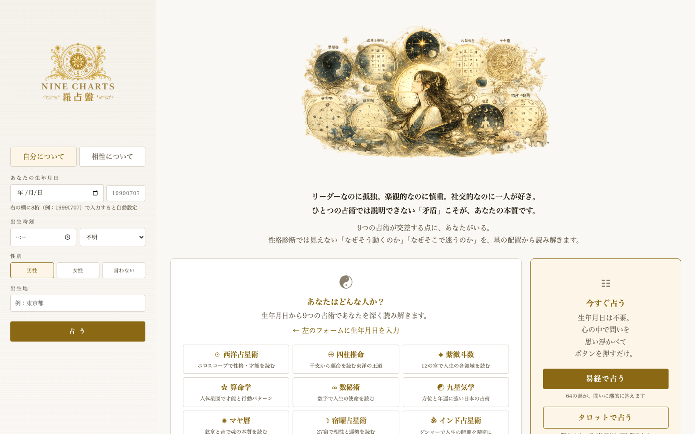

Selected Work — 02
AIと、つくる速さ
手を動かして、確かめる
生成AIで試作のコストが下がった、と言われる。それが本当かは、自分で作ってみないと分からない。デザインツールを開かず、コードを書く前提で、思いついたものを作り続けている。
Background
作れるようになると、何が変わるのか。
デザイナーとして20年、絵は描けてもコードは書けなかった。作りたいものがあっても、誰かに頼むか、諦めるかだった。2025年、生成AIと一緒にコードを書くようになって、その前提が崩れた。思いついた夜に動くものができる。
ただ、「速く作れる」だけなら道具の話で終わる。知りたかったのは、作る速さが上がると考え方が変わるのかということだった。それを確かめるために、仕事とは関係のないものを、思いついた順に作っている。
Work 01 — 平安京
史料が少ない街を、1町ずつ建てる。
ブラウザで動く3D CADを自作し、それで平安京を作った。『大内裏図』から区画を自動でトレースし、寝殿造の邸宅、東西の市、羅城門、朱雀大路を実寸で置いていく。時刻と月齢で光が変わり、ドローンの画角で街を飛べる。
難しかったのは形ではなく、正解が無いことだった。平安京は史料が少ない。だから寸法ごとに「規格で決まっている／特定の記録から取った／複数の推定の代表値／こちらの推定」の4区分を残し、あとで直せるようにした。矛盾は機械検査で出す。「敷地が川を横切っている」「邸宅の家政部分が欠けている」のような検査を積み上げて、通るまで直す。

正解が無いものは、人に聞いても決まらない。推定の確度を4区分で残し、矛盾を検査で出して直す。
作れる速さが上がると、「まず置いてみて矛盾を見る」ができる。考えてから置く、の順が逆になった。
Work 02 — PetMessenger
1997年の、あの気持ちをもう一度。
ポストペットに癒された記憶がある。メールを運ぶペットが部屋で勝手に動いていて、それを見ているだけで嬉しかった。あの気持ちの正体は何だったのか。Three.jsで3Dの部屋とペットを作り、Firebaseでメッセージを運ばせて、自分で確かめてみた。
作ってみて分かったのは、癒しの正体は機能ではなく「勝手に動いている」ことだった。おやつをやる、なでる、ボールを投げる——操作はどれも副次的で、放っておくと窓を見に行ったり、ラグで腹這いになったり、伸びをする。それを横目で見ている時間が、あの気持ちだった。

自分が1997年のユーザーだったので、自分で1週間使った。何をしているときに嬉しいかをメモした。
「便利」ではなく「勝手に生きている」が価値。機能を足すほど、その感じは薄れた。
Work 03 — 羅占盤
9つの占いを重ねると、矛盾が出る。
西洋占星術、四柱推命、紫微斗数、算命学、数秘術、九星気学、マヤ暦、宿曜、インド占星術。生年月日を入れると9つの占術を同時に計算し、結果を重ねる。狙いは当てることではなく、占術同士の矛盾を見せることだった。「リーダーなのに孤独。楽観的なのに慎重」——ひとつの占術では説明できない食い違いこそが、その人らしさとして残る。
作ってから最初に困ったのは、結果が長すぎて読まれないことだった。矛盾のまとめ、タグライン、性格、生き方、物語、処方箋、人格の6層、相性——全部が同じ強さで縦に積まれていた。情報を減らすのではなく、最初に何を見せるかを決めるだけで読まれ方が変わった。

何人かの生年月日で結果を出し、「要するにあなたは」の1行が本人に当たるかを聞いた。当たらない組み合わせを直した。
密度は高くていい。ただし優先順位が無いと、密度はただの長さになる。
Work 04 — Training Dashboard
自分の体のデータで、試す。
パーソナルトレーニングの記録を可視化するダッシュボード。概要・体型分析・ベンチマーク比較・目標達成予測・食事分析の5タブで、CSVを入れると更新される。データがあると何が言えるのか、自分の体を使って確かめている。
Work 05 — KITT
デザインツールを、一切開かずに。
PhotoshopもIllustratorも開かず、UIデザインを一切せずにどこまで作れるか。1980年代のドラマ「ナイトライダー」の車載ダッシュボードをモチーフにしたWebラジオ。Web Audio APIの音声ビジュアライザー、CRT風のグロー。ここまで行けるなら、「コードを書く前提のデザイン」は現実になっている。
What This Showed
速く作れると、確かめる回数が増える。
5つを作って分かったのは、速さそのものより、確かめる回数が増えることだった。以前は「作る前に考え切る」しかなかった。いまは置いてみて、矛盾を見て、直す。平安京の検査も、PetMessengerで機能を足して薄れたのも、羅占盤の長さも、全部作ってから分かった。
試作は答えを出すためのものではなく、問いを見つけるためのものになった。授業で学生に「まず空想で書いて、確かめて置き換えていこう」と言えるのは、自分が毎週これをやっているからだ。
「作れるようになったから、確かめる回数が増えた。答えが出るようになったわけではない。」